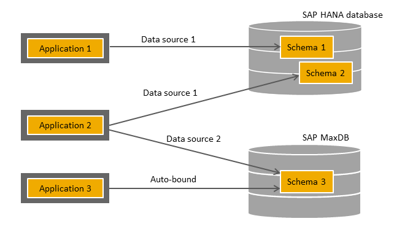

Each application deployed on SAP Cloud Platform can be assigned one or more database schemas. A schema is associated with a particular account and is available solely to applications within this account. A schema can be bound to multiple applications.
In a typical life cycle, a schema is created, bound, unbound, and deleted.
You can create schemas explicitly with a freely definable name and assign them certain properties, such as a specific database type. The schema is independent of any application and has to be explicitly bound.
Schemas can also be created automatically for applications. If you have not explicitly bound a schema to an application when it is deployed and started for the first time, a schema is created and bound implicitly. This is the fallback behavior on SAP Cloud Platform.
Note that a schema ID is unique within an account. When a schema is created automatically, an ID is also created based on a combination of the account and application names and the suffix web.
Schemas can be bound to applications based on an explicitly named data source or using the default data source. The main differences are as follows:
When you bind the schema to an application, you specify a data source name. This establishes a named binding between the schema and application and allows the schema to be addressed by the application. The data source name is equivalent to the name used for the JNDI lookup.
Named bindings allow an application to be bound to more than one schema and, in turn, to use more than one database at the same time. The databases can be distinguished by the binding names.
The schema is bound to the application without an explicitly specified data source name and is consequently associated with the default data source. It can be addressed by the application by any name. An application bound to the default data source cannot be bound to any additional schemas. This applies when a schema was automatically created and bound.
The use of the default data source is a convenient option for applications that require only one database.
You can share a schema between applications by binding the same schema to more than one application. Bear in mind the following when binding schemas to applications:
In the overview below, applications 1 and 2 have been explicitly bound to the associated schemas, while application 3 uses a schema that was automatically created and bound:

Note that applications can also use schemas belonging to other accounts if they are explicitly granted access permission.
Unbind a schema from an application if the application no longer needs it. It can still be used by other applications to which it is still bound. Before a schema can be deleted, it has to be unbound from all applications. Schemas can only be deleted if they no longer have any bindings.
If an application is undeployed but was not unbound from the schema beforehand, the schema will still be listed as bound to the application and will therefore still be bound if the application is redeployed.
You should drop a schema when it is no longer required or if you want to redeploy an application from scratch.
Before deleting a schema, you should explicitly remove any bindings that still exist between the schema and an application. You can also remove all bindings by enforcing the deletion of the schema.
When using explicitly named data sources to create bindings between schemas and applications, make sure that the data source names are the same as the JNDI names used in the applications.
Data sources are defined as resources in the web.xml file, or as JTA or non-JTA data sources in the persistence.xml file in the normal manner. Data sources can be referenced in the application code using a context.lookup or annotations (@Resource, @PersistenceUnit, @PersistenceContext).
When using explicitly named data sources in the Java EE 6 Web Profile runtime environment, you need to create two additional bindings: